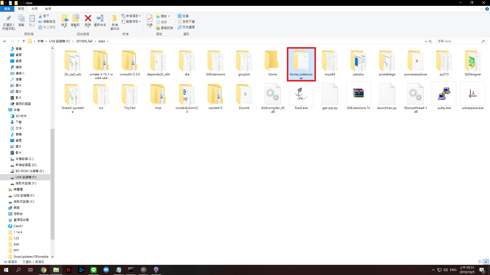

week <<
Previous week2
本周目標:架設個人網站
1.先至個人githubthub建立一個新的倉儲將其命名為 "cad2019" 並將下面的
lnitialize this repository with a README選項打勾以建立倉儲
並且設定github page
(建立倉儲)
(選擇分頁)
2.下載 課程套件 並解壓縮放入隨身碟中
(下載可攜套件)
(解壓縮)
3.將倉儲 git clone 下來(若在學校中需要設定proxy)
(複製倉儲網址)

(clone下來)

(到home_mdecourse設定proxy)
(開啟.gitcongif設定proxy=[2001:288:6004:17::17]:3128)
4.這學期近端有所變更需要使用 git submodule 將子模組下載下來
其指令為 git submodule add https://github.com/mdecourse/cmsimde.git cmsimde
(利用submodule載入子模組)
5.進入倉儲資料夾中打開 cmsimde --> up_dir 將檔案全選後複製到倉儲資料夾中
(打開倉儲資料夾中的cmsimde)
(在開啟裡面的up_dir)
(將檔案全選後copy並回到倉儲資料夾貼上)
6.在cmd視窗中切換至 cmsimdede 資料夾 輸入 python wsgi.py 開啟近端伺服器
(首次執行需額外再輸入 python -m pip install flask_cors下載套件)
(下載flask_cors套件)
(架設近端伺服器)
7.打開瀏覽器輸入 https://localhost:9443 (埠號為個人所設定 預設為9443)進行編輯
且打開靜態網頁查看編輯結果
(動態近端網址)
(更改動態近端內容後轉化為靜態近端)
(靜態近端網址)
(查看是否修改成功)
8.編輯完成後將檔案 git push 至雲端後 完成本周的目標
(將檔案push至github)
week <<
Previous